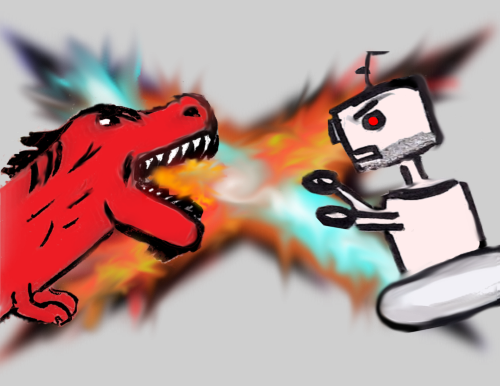
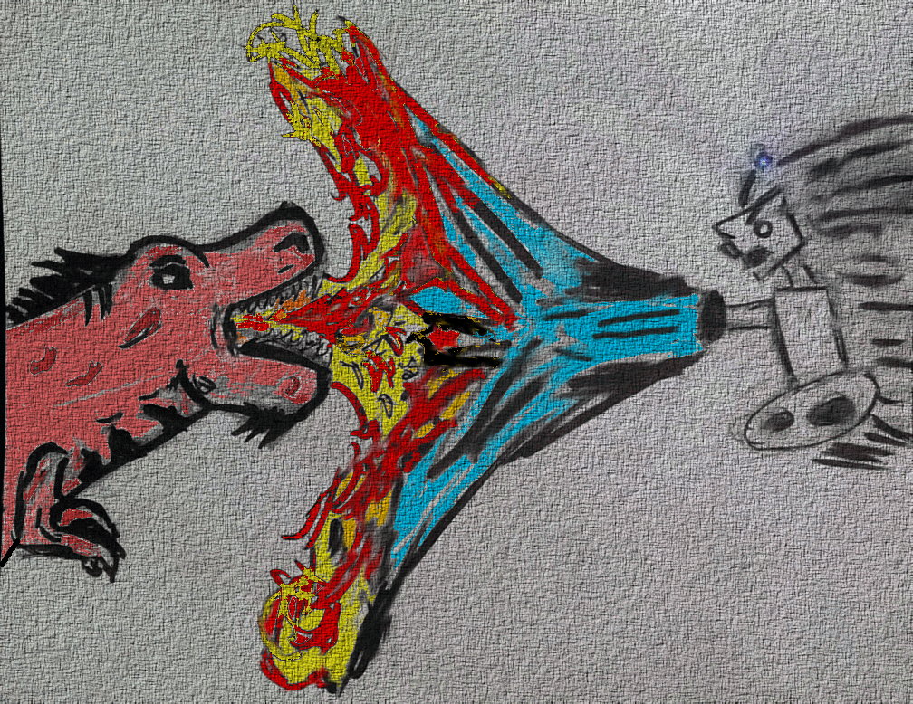
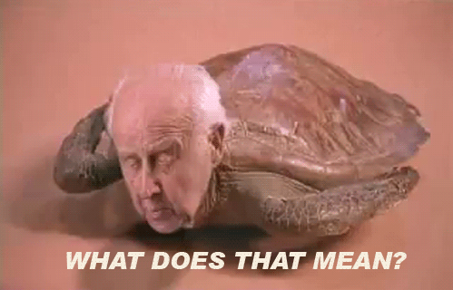

DxR
Marcell Vazquez-Chanlatte
@mvcisback
DxR?

Dinos vs Robots?

DxR Cross Reference
Dehydra Cross Reference

SEARCH!!!
Such Speed

Untangling the mess

C Plugin
TODO: Make diagram AST -> meta data -> (key, val, loc) -> ES
TODO: Make Diagram Query -> (val, loc, rank) -> prettified output
Type Search
Ok ...
C Type Search
(type1<X,Y>, type2) -> output<Z>(auto)-> B(_)-> B(int)-> B(_*)-> B(_,_)-> B(_)-> *B(B)-> auto(B)-> _(B*)-> _(B)-> int(B,A)-> _1. Don't
2. Cheat
Ternjs
Spider Flunky
A Slight Hack
interface Node {
type: string;
loc: SourceLocation | null;
}
interface Name <: P1, P1 {
key: val;
}spiderflunky.hs
Similar Projects
Source Graph
Hoogle
Hayoo
- Developers!
- Developers!
- Developers!
- Developers!
- Developers!
- github.com/mozilla/dxr
- #static